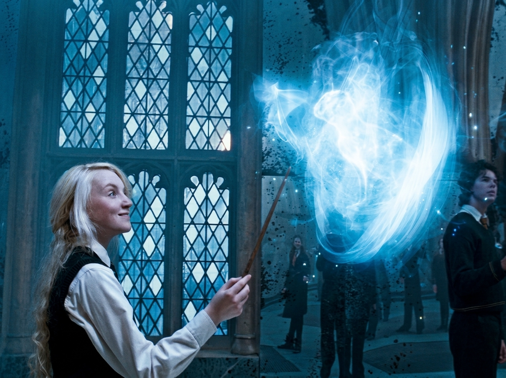

Feitiços repetidos
→ HábitosFeitiços são conjurações mágicas que um bruxo busca na mente e materializa na realidade.
Assim como o bruxo treina o mesmo feitiço até acertar, cada repetição fortalece as conexões entre neurônios, e o comportamento fica mais automático...